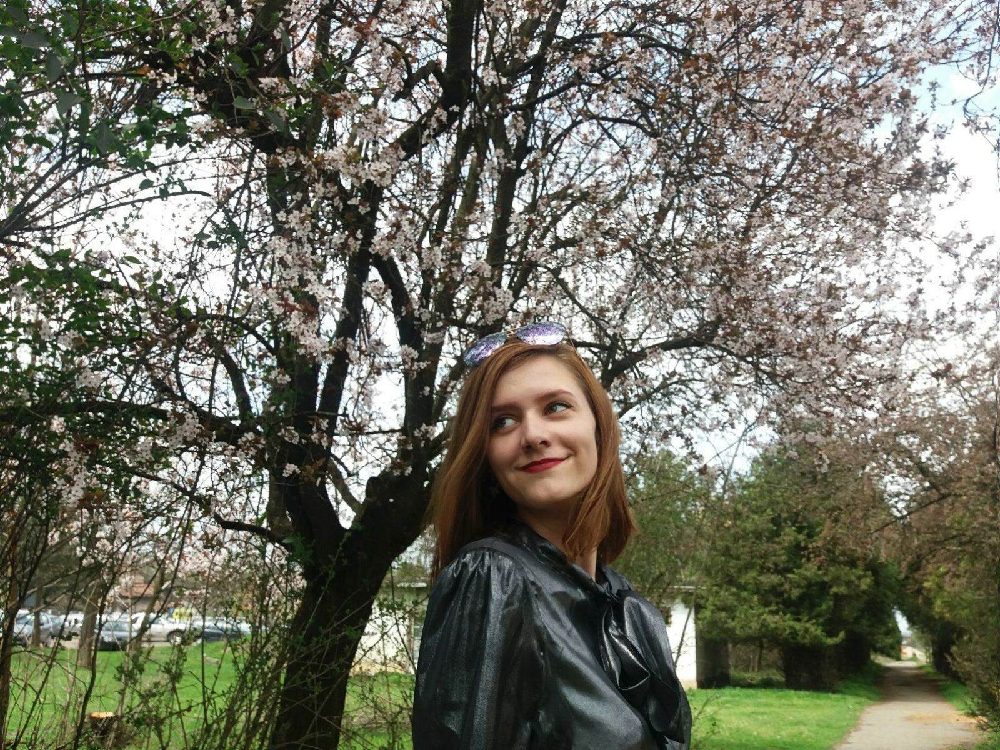
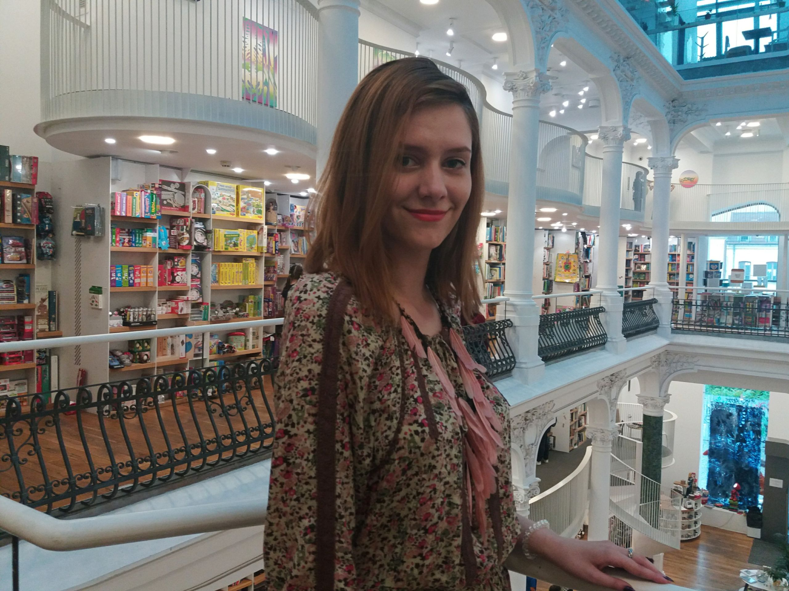
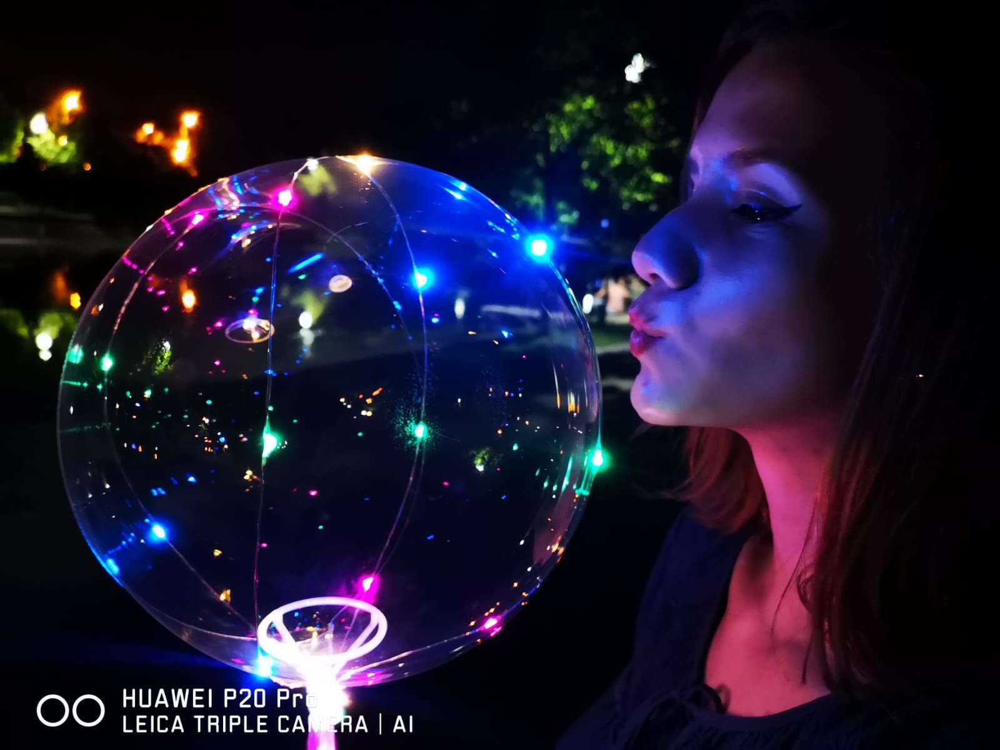
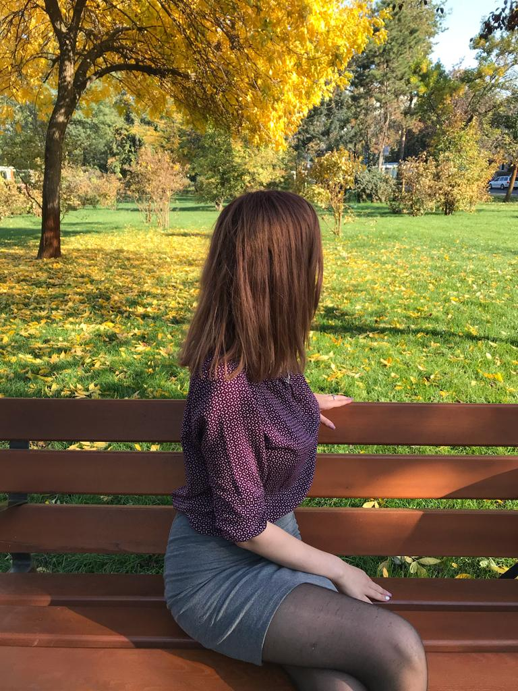
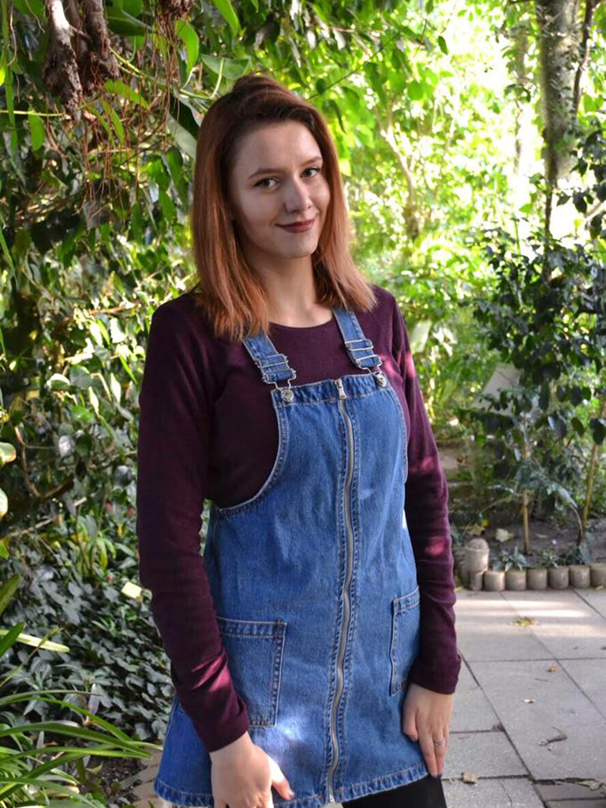
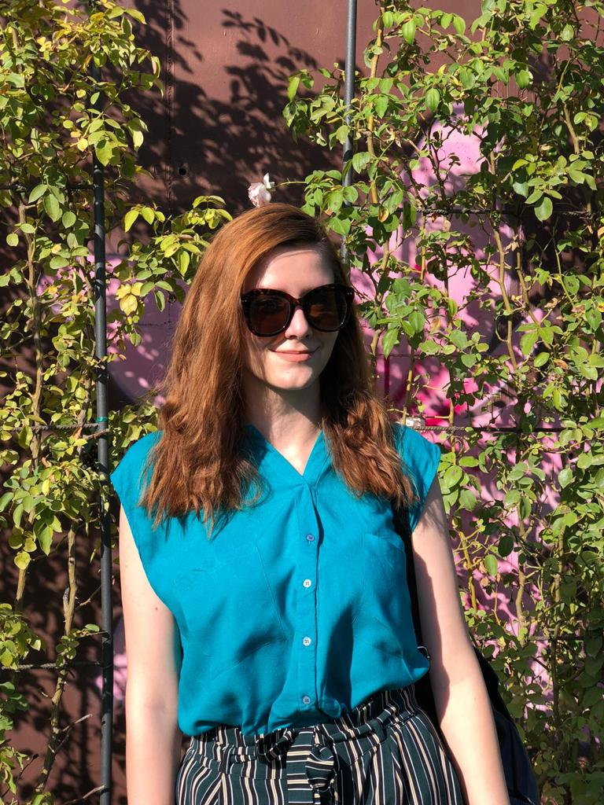

"You must make a choice to take a chance or your life will never change"








Who I am?
My name is Filip Mihaela Monica, I am 22 years old and I am a fourth year student at the Faculty
of Electronics, Telecommunications and Information Technologies, specialization Technologies and Systems
of Telecommunications, at Multimedia, within the University Politehnica Timisoara.
Click for more
Now I live in Timișoara but I am not from Crișcior commune, Hunedoara. I was born in Hunedoara.

How I am?
I was born on November 8, 1998, I am the scorpion sign.
I consider myself a shy person sometimes, funny and insightful most of the time.
I am a fairly calm, empathetic, soulful person, who prefers to think more than what he says.
Most of the time I aspire to search or find things on my own, I think that's how I develop.
From the category of strengths I can say that I am an organized and hardworking person, and as weaknesses
I'd say I'm a little insecure sometimes.
What I like?
I like to find out new things, to look for and discover something different
Every day, read a certain number of pages a day if possible, take pictures and travel .
In my free time I listen to music, more the music of the 70's-80's or that latino music ,
I listen to MagicFm radio the most.
I fit the pattern "girls like cats and tea", I even did it with a colleague
a computer graphics project based on this theme at faculty.
Most of the time I aspire to search or find things on my own, I think that's how I develop.
From the category of strengths I can say that I am an organized and hardworking person, and as weaknesses
I'd say I'm a little insecure sometimes.
What I like?
I like to find out new things, to look for and discover something different
Every day, read a certain number of pages a day if possible, take pictures and travel .
In my free time I listen to music, more the music of the 70's-80's or that latino music ,
I listen to MagicFm radio the most.
I fit the pattern "girls like cats and tea", I even did it with a colleague
a computer graphics project based on this theme at faculty.
I fit the pattern "girls like cats and tea", I even did it with a colleague
a computer graphics project based on this theme at faculty.